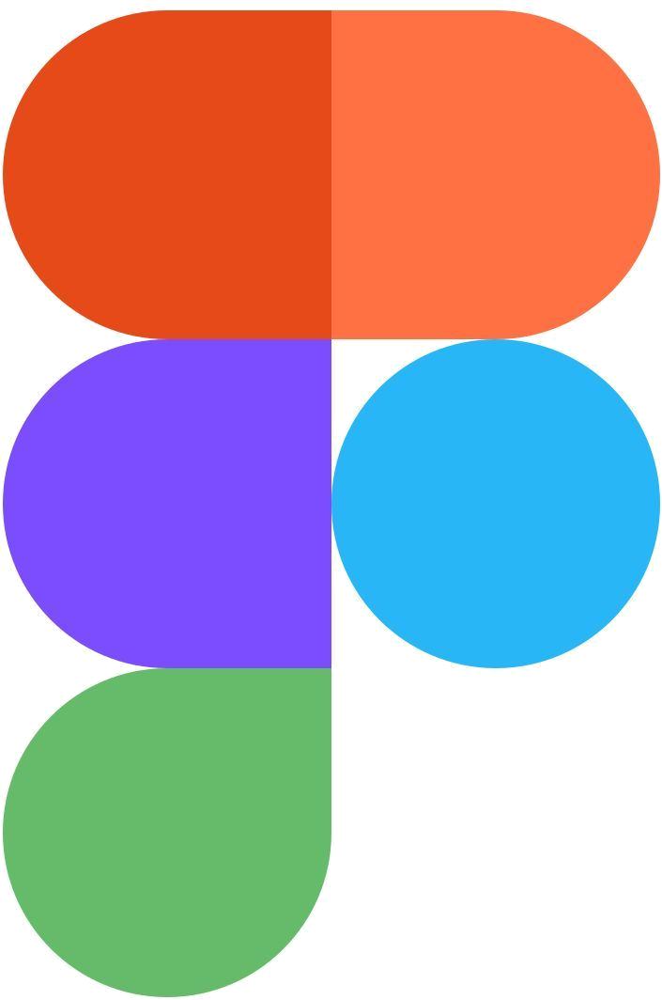
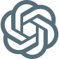
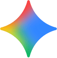

이력서
학력과 수상, 활동 이력을 확인할 수 있습니다.
저는 하나의 문제를 만나면 여러 방향으로 질문을 던지며 가능성을 넓히는 사람입니다. 문제와 부딪히며 생각의 방향을 바꾸고, 사용자의 상황과 새로운 근거를 만나면 처음의 생각도 다시 살펴봅니다. 넓어진 생각은 사용자가 겪는 문제를 기준으로 모으고, 서비스의 구조와 화면 흐름으로 구체화합니다.
다양한 방향으로 탐색하고, 근거를 바탕으로 다음 방향을 정하는 것.
이것이 저의 ‘생각이 움직이는 기획’입니다.
학력과 수상, 활동 이력을 확인할 수 있습니다.
기획을 시작한 계기와 일하는 방식을 소개합니다.
서비스 기획, 사용자 여정, 행동 검증을 보여주는 세 가지 프로젝트입니다.
팀원의 근거가 더 설득력 있다면 처음 세운 기획도 다시 살펴봅니다.
서로 다른 의견과 결정 사항을 회의록으로 정리하고, 빠진 근거를 확인합니다.
조사 결과와 서비스 구조를 정리해 왜 그렇게 판단했는지 함께 설명합니다.
재고 관리 및 매장 관리
매장 관리 및 고객 응대
매장 관리 및 고객 응대
| 할 수 있는 일 | 사용하는 방법 | 남기는 결과물 |
|---|---|---|
| 리서치 / 분석 | 요구·RFP 분석, 벤치마킹, SWOT·3Cs | 문제와 판단 근거 |
| 사용자 이해 | 관찰, 인터뷰, 페르소나, 여정맵 | 사용 상황과 사용자 문제 |
| 아이디어 도출 | 마인드맵, 브레인스토밍, 포지셔닝 | 비교할 수 있는 대안 |
| 구조 / 화면 설계 | IA, 시나리오, 플로우차트 | 와이어프레임·화면설계서 |
| 프로토타입 / 검증 | 프로토타이핑, 사용성 테스트, 아이트래킹 | 확인한 행동과 개선 방향 |
| 협업 / 전달 | 회의록, 의견 정리, 프레젠테이션 | 공유할 결정과 발표자료 |


